Trees
#Binary Trees
#Mutual Recursion
(define (is-even n)
(if (= n 0)
#true
(is-odd (- n 1))))
(define (is-odd n)
(if (= n 0)
#false
(is-even (- n 1))))
(is-even 4) ; call
; is_odd n=3
; is_even n=2
; is_odd n=1
; is_even n=0 ;base case produce #true and bubbles back up ^
Mutual Recursion mechanically speaking, is when functions call each other in a cycle.
You can visualize this with pythontutor translated into python
#Backtracking
When we write functions over Trees, they “backtrack”. We don’t explicity write code that tells the function to backtrack, it just so happens that it’s how the code executes because of how function work at a mechanical level.
For example, take this arithmetic expression:
; evaluating:
(* (+ 3 2 (/ 5 5)) (- 4 2)) ; multiplication is waiting
(* (+ 3 2 1) (- 4 2))
(* 6 (- 4 2))
(* 6 2) ; finally backtracking to do the multiplication
12Note that calling and executing are two different things. Think of it like “calling” a taxi, it takes time to get here, or it can arrive immediately if nearby. An example of a function call that immediately executes is (* 4 9) because it doesn’t have any nested sub-expressions.
Starting from the left most operation to the right most, we see multiplication first!
(* ...)is called 1st, but it is executed last, becaues it needs all its operands to be values before it can run.(+ 3 2 (/ 5 5))is called 2nd, but it is executed later(/ 5 5)is called 3rd, but it is executed 1st!(+ 3 2 1)We backtrack to the + in step 2 and can finally execute it to produce6(- 4 2)called 4th and executed immediately since it has no sub functions(* 6 2)Finally we’re backtracking all the way to step 1 and can execute
#Visualizing the Stack
Programming languages keep track function mechanics by what is called a “stack”, which keeps track of
- what function is currently executing
- the values of variables called with the function
- the pending functions called but waiting to be executed
The best way to visualize a stack is to think of a physical stack of plates. When you add a new plate, you place it on the very top. When you need to take a plate off, you take the one from the top—which was the last one you put there. This is called a “Last In, First Out” data structure.
Everytime we call a function, we push it ontop of the stack, creating a “stack frame”.
The item at the top of the stack is the operation that is the one that’s executing!
1. The Initial Call
┏━━━━━━━━━━━━━━━━━━━━━━━━━━━━━━━━━━━━┓ ┃ (* (+ 3 2 (/ 5 5)) (- 4 2)) ┃ <--- Root Task ┗━━━━━━━━━━━━━━━━━━━━━━━━━━━━━━━━━━━━┛
2. Pushing the Addition
┏━━━━━━━━━━━━━━━━━━━━━━━━━━━━━━━━━━━━┓ ┃ (+ 3 2 (/ 5 5)) ┃ <--- Pushed ┣━━━━━━━━━━━━━━━━━━━━━━━━━━━━━━━━━━━━┫ ┃ (* (...) (- 4 2)) ┃ <--- Pending ┗━━━━━━━━━━━━━━━━━━━━━━━━━━━━━━━━━━━━┛
3. Pushing the Division
┏━━━━━━━━━━━━━━━━━━━━━━━━━━━━━━━━━━━━┓ ┃ (/ 5 5) ┃ <--- Pushed ┣━━━━━━━━━━━━━━━━━━━━━━━━━━━━━━━━━━━━┫ ┃ (+ 3 2 (...)) ┃ <--- Pending ┣━━━━━━━━━━━━━━━━━━━━━━━━━━━━━━━━━━━━┫ ┃ (* (...) (- 4 2)) ┃ <--- Pending ┗━━━━━━━━━━━━━━━━━━━━━━━━━━━━━━━━━━━━┛
4. Resolving Division
┏━━━━━━━━━━━━━━━━━━━━━━━━━━━━━━━━━━━━┓ ┃ 1 ┃ <--- Result ┣━━━━━━━━━━━━━━━━━━━━━━━━━━━━━━━━━━━━┫ ┃ (+ 3 2 (...)) ┃ <--- Resuming ┣━━━━━━━━━━━━━━━━━━━━━━━━━━━━━━━━━━━━┫ ┃ (* (...) (- 4 2)) ┃ <--- Pending ┗━━━━━━━━━━━━━━━━━━━━━━━━━━━━━━━━━━━━┛
5. Addition Resolved
┏━━━━━━━━━━━━━━━━━━━━━━━━━━━━━━━━━━━━┓ ┃ 6 ┃ <--- Result ┣━━━━━━━━━━━━━━━━━━━━━━━━━━━━━━━━━━━━┫ ┃ (* (...) (- 4 2)) ┃ <--- Resuming ┗━━━━━━━━━━━━━━━━━━━━━━━━━━━━━━━━━━━━┛
6. Pushing Subtraction
┏━━━━━━━━━━━━━━━━━━━━━━━━━━━━━━━━━━━━┓ ┃ (- 4 2) ┃ <--- Pushed (Current Task) ┣━━━━━━━━━━━━━━━━━━━━━━━━━━━━━━━━━━━━┫ ┃ (* 6 (...)) ┃ <--- Now Resuming ┗━━━━━━━━━━━━━━━━━━━━━━━━━━━━━━━━━━━━┛
7. Resolving Subtraction
┏━━━━━━━━━━━━━━━━━━━━━━━━━━━━━━━━━━━━┓ ┃ 2 ┃ <--- Result ┣━━━━━━━━━━━━━━━━━━━━━━━━━━━━━━━━━━━━┫ ┃ (* 6 (...)) ┃ <--- Current Task ┗━━━━━━━━━━━━━━━━━━━━━━━━━━━━━━━━━━━━┛
8. Final Result
┏━━━━━━━━━━━━━━━━━━━━━━━━━━━━━━━━━━━━┓ ┃ 12 ┃ <--- Final Value ┗━━━━━━━━━━━━━━━━━━━━━━━━━━━━━━━━━━━━┛
In reality, very simple functions like math operations aren’t really function calls in that they don’t push onto a stack frame because it comes with a performance cost, but for our purposes we can imagine it does to explain the mechanics of the stack.
Stack space is limited and if you have too many functions pushing onto the stack, you end up with what is called a "stack overflow”. We’ll address this problem with accumalators.
#Visualizing the stack with Debugger
You can visualize the stack using the racket debugger. The Advanced Student Debugger is kinda buggy though because it has a lot of random ”??“”, so we’re going to switch to the full racket language temporarily to use the debugger. The changes to convert out ISL program to a full racket program is to replace the top line with:
#lang racket
(require test-engine/racket-tests) ; for check expect to workNote that you should comment out typed signatures, templates, etc
Here are some other good resources on recursion and mutual recursion
Nic Barker - Recursion, Explained Simply